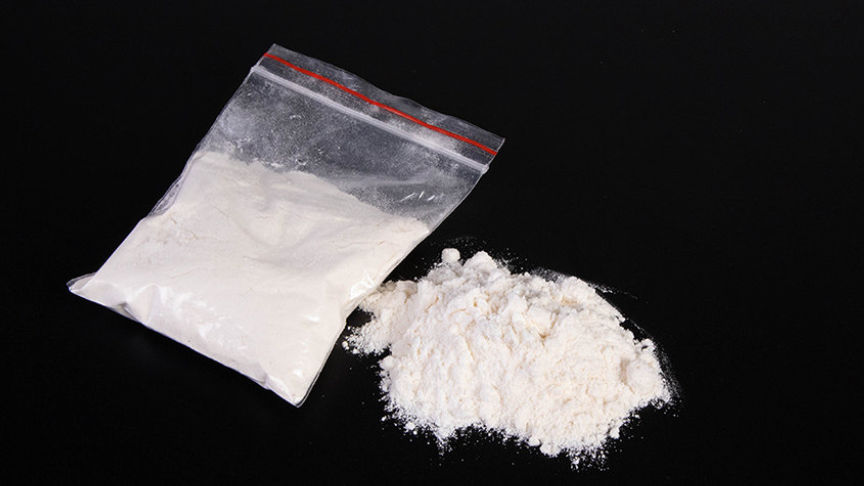
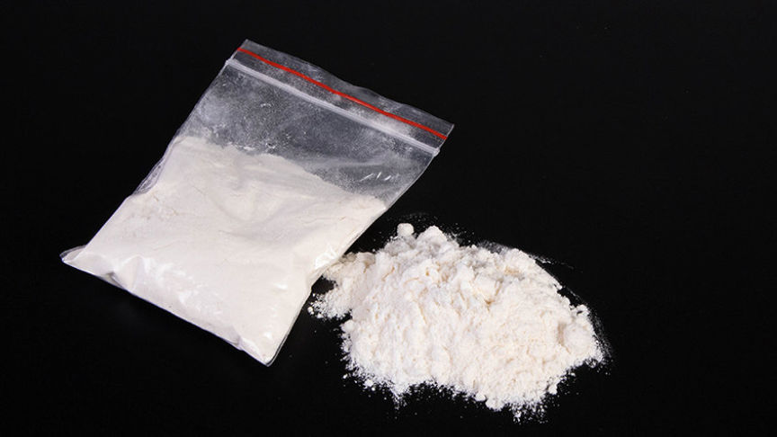

Opiates Vendor "DopeKingUSA" Imprisoned for Distributing Fentanyl
~2 min read | Published on 2023-06-09, tagged Darkweb-Vendor, Sentenced using 254 words.
A New Hampshire man was sentenced to 156 months in federal prison for selling kilos of fentanyl through the dark web.

The US Attorney's Office for the Western District of Michigan said in a release that 24-year-old Craig Warme of New Hampshire was jailed after he admitted he conspired in the distribution of large quantities of fentanyl throughout the US via the vendor name "DopeKingUSA" on the now-defunct AlphaBay marketplace.
Investigations by agents from the United States Postal Inspection Service (USPIS) and the Drug Enforcement Administration (DEA) revealed that from at least June 2022 to December 2022, Warme used the DopeKingUSA vendor profile to market and sell different forms of heroin. The investigators made multiple Undercover purchases from DopeKingUSA during the investigations.
Tests carried out on the drugs received from DopeKingUSA allegedly revealed that the vendor was distributing fentanyl, not heroin.
The investigators established that Warme and his accomplices participated in a drug trafficking operation that was responsible for the sale and distribution of at least 10 kilograms of fentanyl. The sales made Warme approximately $417,355.
Warme and one of his accomplices, Keegan R. Ball, were charged in a three-count indictment filed on December 13, 2022. They were charged with one count of conspiracy to distribute fentanyl and two counts of distribution of fentanyl and aiding and abetting the distribution of fentanyl.
Warme pleaded guilty to conspiracy to distribute fentanyl in February 2023.
In addition to the 13 years in prison, US District Court Judge Jane M. Beckering sentenced Warme to 3 years of supervised release on June 8, 2023.

The US Attorney's Office for the Western District of Michigan said in a release that 24-year-old Craig Warme of New Hampshire was jailed after he admitted he conspired in the distribution of large quantities of fentanyl throughout the US via the vendor name "DopeKingUSA" on the now-defunct AlphaBay marketplace.
Investigations by agents from the United States Postal Inspection Service (USPIS) and the Drug Enforcement Administration (DEA) revealed that from at least June 2022 to December 2022, Warme used the DopeKingUSA vendor profile to market and sell different forms of heroin. The investigators made multiple Undercover purchases from DopeKingUSA during the investigations.
Tests carried out on the drugs received from DopeKingUSA allegedly revealed that the vendor was distributing fentanyl, not heroin.
The investigators established that Warme and his accomplices participated in a drug trafficking operation that was responsible for the sale and distribution of at least 10 kilograms of fentanyl. The sales made Warme approximately $417,355.
Warme and one of his accomplices, Keegan R. Ball, were charged in a three-count indictment filed on December 13, 2022. They were charged with one count of conspiracy to distribute fentanyl and two counts of distribution of fentanyl and aiding and abetting the distribution of fentanyl.
Warme pleaded guilty to conspiracy to distribute fentanyl in February 2023.
In addition to the 13 years in prison, US District Court Judge Jane M. Beckering sentenced Warme to 3 years of supervised release on June 8, 2023.